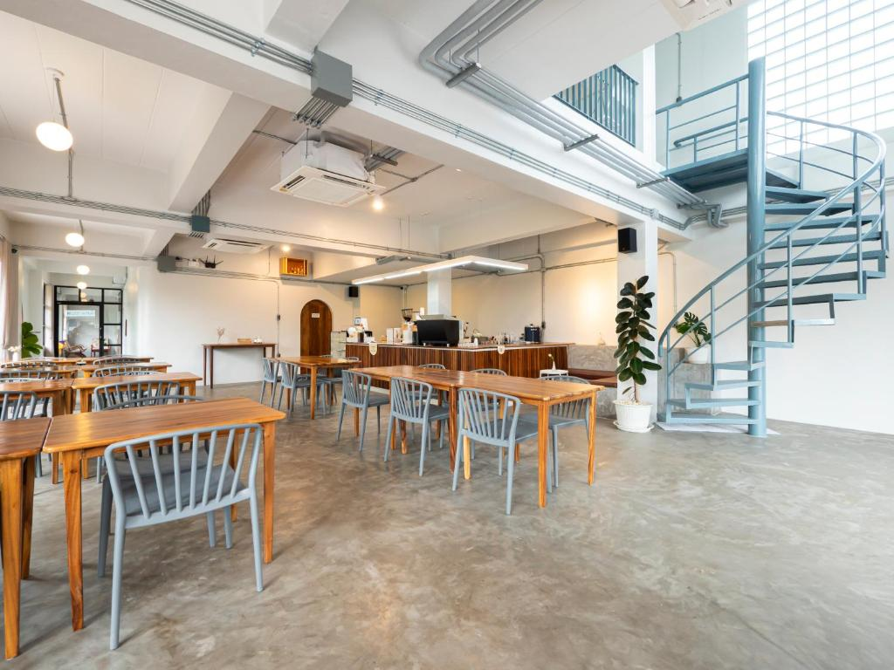

Moonlight Cafe & Hotel

คาเฟ่เปิดใหม่ในอำเภอท่าศาลา ใช้พื้นที่บริเวณหน้าโรงแรมเปิดเป็นคาเฟ่ ตกแต่งเรียบง่าย โล่งโปร่ง นั่งสบาย มีที่จอดรถด้านหลัง เมนูมีครบทั้งอาหารคาวหวานและเครื่องดื่ม Moonlight Signature เป็นกาแฟส้มยูซุ กาแฟหอมๆรสเบาๆ ส้มยูซุหวานเปรี้ยว ดื่มแล้วสดชื่นดี ส่วน Toffee Cake ขนมโฮมเมด รสชาติดีไม่หวานจนเกินไป
ที่อยู่ : อำเภอลานสกา จังหวัดนครศรีธรรมราช
เวลาเปิด–ปิด :09:00 – 18:00 น.